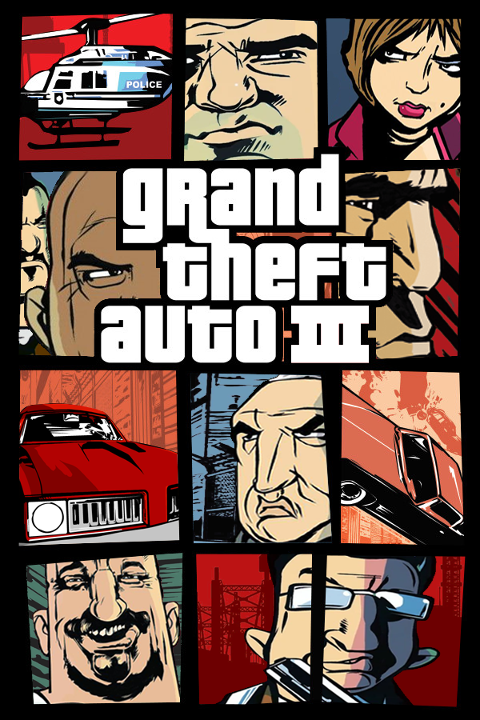

Grand Theft Auto III
Grand Theft Auto III
Details
|  | |
| Playtime | Not Played |
| Last Activity | Never |
| Added | 5/7/2025 1:26:35 |
| Modified | 5/7/2025 1:28:49 |
| Completion Status | Not Played |
| Library | Playnite |
| Source | Steam |
| Platform | $PC (Windows) |
| Release Date | 5/20/2002 |
| Community Score | |
| Critic Score | 93 |
| User Score | |
| Genre | Action Open world Shooter TPS |
| Developer | DMA Design TransGaming |
| Publisher | Buka Entertainment Capcom Rockstar Games Tech Dealer |
| Feature | Controller Support Full Controller Support Single Player |
| Links | PCGamingWiki Official site HowLongToBeat IGDB SteamDB StrategyWiki MobyGames Wikipedia WSGF |
| Tag | Automobile Bus Contemporary Direct control Naval/watercraft North America Realistic Real-Time RenderWare Street racing Tank Third Person Train Transport Truck |
Description
Grand Theft Auto III is a 2001 action-adventure game developed by DMA Design and published by Rockstar Games. It was the first 3D game in the Grand Theft Auto series. Set in Liberty City, loosely based on New York City, the story follows Claude, a silent protagonist who becomes entangled in a world of crime, drugs, gang warfare and corruption. The game is played from a third-person perspective and its world is navigated on foot or by vehicle. Its open world design lets players freely roam Liberty City.
Development was shared between DMA Design, based in Edinburgh, and Rockstar, based in New York City. Development involved transforming popular Grand Theft Auto elements into a fully 3D world for the first time. The game was delayed following the September 11 attacks to allow the team to change references and gameplay deemed inappropriate. Grand Theft Auto III was released in October 2001 for the PlayStation 2, in May 2002 for Windows, and in November 2003 for the Xbox. Mobile ports were released for the tenth anniversary in 2011, followed by a remastered version for the twentieth in 2021.
Grand Theft Auto III received acclaim for its concept, gameplay, sound design, and visual fidelity, but generated controversies for its violence and sex. It received year-end accolades from several gaming publications, and it is considered a landmark game in the open world concept, one of the most significant games of the sixth generation of consoles, and among the best video games. It was the best-selling video game of 2001 and among the best-selling PlayStation 2 games with over 11.6 million copies sold; it has sold over 14.5 million copies overall. The game was followed by Grand Theft Auto: Vice City (2002) and two prequels, Advance (2004) and Liberty City Stories (2005).
Gameplay
Grand Theft Auto III is an action-adventure game played from a third-person perspective. Players complete missions—linear scenarios with set objectives—to progress through the story. It is possible to have several missions available at a time, as some missions require players to wait for further instructions or events. Outside of missions, players can freely roam the open world and complete optional side missions. They begin in the borough of Portland, and unlocks Staunton Island and Shoreside Vale as they progress in the storyline.
Players may run, jump or use vehicles to navigate the game world. In combat, auto-aim can be used as assistance against enemies. Should players take damage, their health meter can be fully regenerated through the use of health pick-ups. Body armour can be used to absorb gunshots and explosive damage, but is used up in the process. When health is entirely depleted, gameplay stops and players respawn at the nearest hospital, at the expense of losing armour, weapons, and an amount of money.
If players commit crimes while playing, the game's law enforcement agencies may respond as indicated by a "wanted" meter in the head-up display (HUD). On the meter, the displayed stars indicate the current wanted level (for example, at the maximum six-star level, efforts by law enforcement to incapacitate players become very aggressive). Law enforcement officers will search for players who leave the wanted vicinity. The wanted meter enters a cooldown mode and eventually recedes when players are hidden from the officers' line of sight.
The game lets players control the mute criminal Claude. Throughout the story, Claude meets various players from the criminal underworld. As players complete missions for different gangs and criminal organisations, fellow gang members will often defend players, while rival gang members will recognise players and subsequently shoot on sight. While free roaming the game world, players may engage in activities such as a vigilante minigame, a firefighting activity, a paramedic service and a taxi cab service. Completion of these activities grants players with context-specific rewards; for example, completing the vigilante mission allows players to bribe police after committing a crime.
Players use melee attacks, firearms and explosives to fight enemies. The firearms include weapons such as the Micro Uzi, an M16 rifle and a flamethrower. The game's three-dimensional environment allows a first-person view while aiming with the sniper rifle, rocket launcher and the M16 rifle. In addition, the game's combat was reworked to allow players to commit drive-by shootings by facing sideways in a vehicle. The game gives players a wide variety of weapon options—they can be purchased from local firearms dealers, found on the ground, retrieved from dead enemies, or found around the city.
Plot
Small-time criminal Claude is betrayed and shot by his girlfriend Catalina (voiced by Cynthia Farrell) during a bank heist outside Liberty City. Claude is arrested but escapes during his transfer to prison when members of the Colombian Cartel ambush his transport to abduct another prisoner. During his escape, Claude befriends explosives expert and fellow convict 8-Ball (Guru), who shelters Claude and introduces him to the Leone Mafia family for work. Claude assists the Mafia with various operations, including winning a gang war against a local group of Triads, earning him the respect of Don Salvatore Leone (Frank Vincent). After learning the Cartel are creating and selling a new street drug called SPANK to fund their expansion into Liberty City, Salvatore orders Claude to destroy their floating drug lab. Claude accomplishes this with 8-Ball's help.
Salvatore later instructs Claude to deal with a minor problem, but his trophy wife Maria (Debi Mazar), who took a liking to Claude, reveals it to be a set-up. Maria claims she lied to Salvatore about having an affair with Claude to make him jealous, and now Salvatore wants to kill him. Claude escapes to Staunton Island with Maria and her friend Asuka Kasen (Lianna Pai). After killing Salvatore to cut ties with the Mafia, Claude begins working for the yakuza, led by Asuka and her brother Kenji (Les J.N. Mau). During this time, he also provides assistance to corrupt police inspector Ray Machowski (Robert Loggia), whom he eventually helps flee the city, and influential businessman Donald Love (Kyle MacLachlan). Donald hires Claude to kill Kenji under the guise of a Cartel attack to start a gang war to allow Donald to obtain construction sites for his businesses. After the job's success, Claude carries out another task for Donald that leads him to encounter Catalina, now the leader of the Cartel, at a construction site. However, Catalina escapes after betraying and shooting her partner, Miguel (Al Espinosa).
Asuka blames the Cartel for Kenji's death and seizes the construction site. The yakuza capture the wounded Miguel and torture him for information on Cartel operations in the city, allowing Claude to strike against them and hinder the Cartel. Enraged, Catalina murders both Asuka and Miguel and kidnaps Maria, demanding $500,000 for her release. Claude meets with her to pay the ransom, but Catalina deceives him again and traps him. Claude escapes, rescues Maria, and destroys the helicopter Catalina attempts to flee in, killing her. As Claude and Maria leave the scene, Maria begins to complain about the kidnapping, but is silenced by a gunshot.
Development
The core development team of Grand Theft Auto III consisted of about 23 people at DMA Design in Edinburgh, who worked closely with publisher Rockstar Games in New York City. The original tech demo was created on Sega's Dreamcast around the end of development on Grand Theft Auto 2 (1999). Rockstar had been pressuring its teams to create a 3D open world, and the DMA group who developed Space Station Silicon Valley (1998) began working on a project separate from the Grand Theft Auto 2 team. Alan Jack, a DMA support engineer, described it as combining Body Harvest's (1998) exploration with Space Station Silicon Valley's city level.
The team chose against using the Grand Theft Auto branding to avoid conflict with the Grand Theft Auto 2 team and began developing their game as a Godzilla project. After Take-Two Interactive acquired DMA from Infogrames in September 1999, the Space Station Silicon Valley and Grand Theft Auto 2 teams were combined. The combined team began developing Grand Theft Auto III for the Dreamcast, but shifted to the PlayStation 2 after four months. Technical director Obbe Vermeij said the shift was not due to hardware constraints, but because it became clear the Dreamcast was not commercially viable. He described the decision as disappointing, noting the DMA Design staff were big fans of Phantasy Star Online (2000).
During the Dreamcast phase, DMA Design developed city blocks with brownstones, docks, and retail areas, alongside vehicles and pedestrians. By early 2001, the team had designed the city, cars and some weapons. Producer Leslie Benzies described Grand Theft Auto III as a "crime simulation game". Rockstar offered Grand Theft Auto III to Microsoft Game Studios as an Xbox exclusive, but Microsoft declined due to its adult nature and poorly-performing predecessors. The game was released for the PlayStation 2 on 23 October 2001 in North America. When porting the game to Windows, the team delayed it from the PlayStation 2 release in order to ensure quality, citing issues with the simultaneous platform release of previous Grand Theft Auto games. Capcom published the game in Japan on 25 September 2003.
Design
Grand Theft Auto III is the first 3D game in the series, using Criterion Games's RenderWare game engine. Executive producer Sam Houser had always wanted the series to move to 3D, and DMA Design had experimented with 3D worlds in games like Body Harvest and Space Station Silicon Valley. With the release of the PlayStation 2, the team felt a large 3D world was possible. Art director Aaron Garbut felt other video games at the time "were a thing you played", wanting Grand Theft Auto III to be "a place you lived in". An online multiplayer mode was planned, but dropped due to time and resource limitations.
When designing the game, the development team expanded upon concepts introduced in the previous Grand Theft Auto games. Benzies said the intention was to recreate the "freedom and diversity" of the previous games in a "living, breathing 3D world", using the power of the PlayStation 2 to do so. The console's ability to use DVDs, an improvement over the PlayStation's limit to CDs, allowed the team to store more data, such as animations, music and environments. Despite this, the team found it difficult to fit the game into the PlayStation 2's 32 megabytes of RAM, due to the scale. The game's size also created difficulties for the testers, due to the variety of options. Benzies felt creating a living city was the "underlying principle" of the game's concept during development. Sam Houser felt the game's 3D element allowed the "chemistry of the team [to come] together perfectly for the first time".
A major difficulty the team encountered was converting all game elements into a fully 3D world, including the sound and radio stations, as well as designing and voicing the non-player characters, due to the amount that existed within the open world. Producer Dan Houser said there were about 8,000 lines of recorded dialogue in the game, while audio programmer Raymond Usher estimated about 18,000. The basic technical elements of the game began to work together in mid-2000, with a carjacking mechanic prototype and stable streaming model. Streaming was initially intended to be reserved for music and map geometry, but other elements were eventually included when it became apparent to the team as more data was entered.
When designing the game world, the team initially created a "hybrid city", which Dan Houser described as "a post industrial Midwest slash east coast generic" city. Upon developing within this game world, the team realised basing the design on a real location meant "you have a lot of things you can say about it". As a result, they redesigned Liberty City, which had been previously featured in the first Grand Theft Auto (1997), basing it loosely on New York City. DMA Design worked with a team at Rockstar in New York for cultural references; the Rockstar team would regularly work long hours for full weeks, ensuring the references, such as in-game car manufacturers, were appropriate to the city.
The city is broken into three islands: an industrial section representing Brooklyn and Queens, a commercial centre resembling Manhattan, and suburbs similar to New Jersey. The islands unlock as the story progresses; the team wanted players to "start out feeling poor and work to being richer". Dan Houser described Liberty City as a "hybrid of a generic American city", including Chicago, Pittsburgh, Detroit, New York, and Philadelphia. He felt the parallel realism of the world allowed the team to make more social commentary. Sam Houser cited films and shows like Heat (1995) and The Sopranos (1999–2007) as inspiration for the setting and wanted to emulate them in the game. He also cited the influence of The Legend of Zelda, Super Mario 64 and the 1990 film Goodfellas, describing Grand Theft Auto III as "a cross between a gangster movie and an RPG".
The team developed the story and design simultaneously. Dan Houser said, "we use the story to expose the mechanics, and we use the mechanics to tell the story"; however, he found it difficult to create the narrative, as the game is so strongly focused on player freedom. He wanted the story to be more nuanced and interesting than the generic "rise and fall and rise again of a superhero bad guy". The game's script was also focused on mission objectives, attempting to implement high amounts of interactivity. Dan Houser felt each mission is "its own short story", and part of an "overarching story". He and co-writer James Worrall drew influence from films like The Warriors, Taxi Driver, Scarface, and Payback, and the depiction of mafiosi featured in Martin Scorsese's films; When writing the story, Dan Houser and Worrall regularly met with the designers, and filled a room with post-it notes to reconstruct the story components to shape the game.
Many of the game characters were animated using motion capture, filmed at a rented studio at the Brooklyn Navy Yard, though this was limited by technical constraints. The character movement was also treated as being cinematic, though limited polygons heavily inhibited this. Animating non-player characters entering and driving cars proved to be difficult for the team, due to the variety of vehicle designs. "It involved chaining together dozens of different animations and altering key frames in code", recalled software engineer Alan Campbell. The team used varying camera angles when animating the game's cutscenes to evoke different emotions. For the voice acting, the team wanted "natural, subtle performances", which proved difficult as many of the actors "had in their head the idea that because video games are animated, their performances needed to be animated", explained motion capture director Navid Khonsari.
Claude is unnamed in the game, and his name is not officially revealed until his appearance in Grand Theft Auto: San Andreas (2004). He is a silent protagonist, never speaking throughout his appearances; the team decided upon this primarily because it "did not seem like a major issue", due to the other challenges faced during development, and also partly to allow players to identify with the character, as he would be who the players want him to be. The developers did not have "any one single inspiration" for Claude; they liked the idea of a "strong, silent killer, who would be juxtaposed with all of these neurotic and verbose mobsters".
Grand Theft Auto III features about three and a half hours of in-game radio material. For the music, the team sought a broad diversity to recreate the real sensation of skipping through radio stations, reflecting the gangster movie culture invoked by the game. The team used the talk radio stations to add character to the city and provide a "unique take on American life"; Sam Houser described it as "a very iconoclastic look at America". The team used real DJs to portray those on the radio. In doing so, they wrote unusual dialogue for the DJs, seeking the effect of "high production values and absurd content". Music director Craig Conner assembled the assets of the radio station—music, advertisements, DJ dialogue, and station imaging.
Chatterbox FM, one of the game's radio stations, is entirely talk radio hosted by Lazlow Jones, who met Rockstar's managing director Terry Donovan in 2001 as they were both preparing to travel to Los Angeles for E3. Donovan invited Jones to Rockstar's offices in Manhattan, where he met the development team, including Dan and Sam Houser and producer Jamie King, and they invited him to work on the game. The writing sessions took place at Dan Houser's apartment, and the entire process, including editing and recording, took around four to five months. With the station's guests and callers, the writers wanted to satirise American lifestyles, focusing on fictional stories as opposed to quickly outdated stories based on recent news. Jones found the conversations to be natural, having worked in radio for several years. The roles of the guests and callers were performed by Jones's friends and neighbours, including his father, and were recorded in New York.
Prior to Grand Theft Auto III's initial release, several modifications were made to the game. While changes are frequent during game development, these changes were noted to be around the time of the 11 September attacks, which led to speculation that the changes were motivated by the attacks. On 19 September 2001, Rockstar delayed the game's release by three weeks, citing the attacks as an influencing factor in the delay. "Everyone had someone who had an uncle or brother [who was impacted by the attack]", said Paul Eibeler, then president of Take-Two Interactive.
One of the changes made shortly after the 9/11 attacks was the colour scheme of the police cars. Originally blue with white stripes, resembling the New York City Police Department, it was changed to a black-and-white design common among several police departments in the United States, such as Los Angeles and San Francisco. Other changes included altering the flight path of a plane to avoid appearing to fly into or behind a skyscraper and removing a mission referencing terrorists, as well as some changes to pedestrian dialogue and talk radio. Another cut to the game was the character of Darkel, a revolutionary urchin who vowed to bring down the city's economy. When references to Darkel were found in the game's code, speculation arose that he was related to 9/11, but Dan Houser explained the character had been cut "months before [release]". There were reports and previews stating the game featured schoolchildren as pedestrians prior to release, although Rockstar dismissed such rumours as "nonsense".
Rockstar stated the game was "about 1% different" after 9/11, and the biggest change was the cover art. They felt the game's original cover, which was still used for its release in Europe, was "too raw" after 9/11, and it was changed to what became the "signature style" of the series. Sam Houser said the cover was designed in an evening and was instantly preferred over the original cover. The cover was inspired by the movie posters for 1960s films, such as The Thomas Crown Affair (1968).
Reception
Critical response
Grand Theft Auto III was released to critical acclaim. Metacritic calculated an average score of 97 out of 100, indicating "universal acclaim", based on 56 reviews. It is tied with Tony Hawk's Pro Skater 3 as the highest-rated PlayStation 2 game on the site and tied with a number of others as the sixth-highest-rated game overall. Reviewers liked the game's sound, gameplay, and open world design, though some criticism was directed at the controls. Tom Bramwell of Eurogamer called Grand Theft Auto III "a luscious, sprawling epic", and Official PlayStation Magazine named it "the most innovative, outlandish, brilliant video game". GameSpot's Jeff Gerstmann described the game as "an incredible experience that shouldn't be missed by anyone"; IGN's Doug Perry named it "one of the best titles of the year, on PlayStation 2, or on any system".
Many reviewers found the 3D graphics a welcome change from the 2D of the previous games. GameSpot's Gerstmann particularly praised the character and vehicle models, and the overall texture quality of the city. GameSpy's Andrei Alupului found the graphics "really rather impressive", describing the car models as "greatly improved" over those in Midnight Club. Eurogamer's Bramwell considered the graphics "generally pleasant to look at", but considered it inferior to games like Gran Turismo 3 and Ico. Justin Leeper of Game Informer described game world as "stunning in scope and detail", and Perry of IGN found it to be "on a scale that's truly epic". Game Revolution's Ben Silverman called the city a "technological marvel ... that captures the essence of gritty city life in amazing detail".
IGN's Perry considered the game's sound "unbelievably and meticulously delivered", particularly praising the soundtrack, voice acting and sound design, stating it was "really approached as if it were done for a movie". Eurogamer's Bramwell echoed similar remarks, describing the city sounds as "perfect" and the soundtrack as "monstrous". The sound was described as "terrific" by GameSpot's Gerstmann and Game Revolution's Silverman, and 1UP.com appreciated the subtlety of the in-game radio stations. AllGame's Scott Alan Marriott named the music "the true star" of the game.
Reviewers considered the style of the game's missions to be a welcoming departure from those in previous games. 1UP.com described the missions as "wonderfully creative", while GamesMaster appreciated the diversity. IGN's Perry similarly appreciated the variety and scale of the missions, and praised the amount of available side missions. GameSpy's Alupului described the game's story as "well-paced" and "coherent", featuring plot elements akin to a mob film. GameSpot's Gerstmann found the missions entertaining and challenging, but noted exploring the game world also offers "a great deal of fun" to players.
Reactions to the game's controls were mixed. Alupului of GameSpy found the game "controls beautifully", both while driving and on-foot. Game Revolution's Silverman identified the control issues as the game's only flaw, although praised the responsiveness of the driving mechanics. Matt Helgeson of Game Informer similarly described the driving as "great", but noted "clunky" combat. GamePro's Four-Eyed Dragon found the cars simple to manoeuvre. Edge described the game's combat as "an awkward system that stymies play". 1UP.com noted particular flaws in the targeting system, explaining it "often focuses on the wrong guy".
Windows version
When Grand Theft Auto III was released for Windows in May 2002, it received similar acclaim. Metacritic calculated an average score of 93 out of 100, indicating "universal acclaim", based on 20 reviews; it is the highest-rated 2002 Windows game on Metacritic. Reviewers liked the visual enhancements and control improvements, but criticised the port for its demanding system requirements.
The in-game features and controls in the port were generally well received. IGN's Tal Blevins praised the higher precision of the mouse controls, finding the aiming mechanic more precise. GameSpot's Erik Wolpaw also commended the mouse controls, but disapproved the replay system, particularly due to the lack of options with timing and camera controls. Extended Play's Andrew Bub appreciated the addition of a custom radio station, as well as the availability of custom skins. Daniel Morris of PC Gamer praised the gameplay tweaks provided by the port but criticised the lack of major additional features, such as an overhead map of the in-game city.
The port's visuals received a positive response from reviewers. GameSpot's Wolpaw praised the port's reworked textures but criticised the frequent popup and the advanced system requirements. IGN's Blevins similarly criticised the necessity of an advanced system for stable play, but ultimately felt the port looks "a bit nicer" than the original game. GameSpy's Sal Accardo felt the port "looks much sharper" than the PlayStation 2 version, though noted some "choppy" animations. Extended Play's Bub mentioned the advanced settings resulted in slowdown and crashes. Game Informer's Matt Helgeson noticed little difference between the visuals of the original and the port.
Mobile version
When Grand Theft Auto III was released to mobile devices in December 2011, it received generally positive reviews. Metacritic calculated an average score of 80 out of 100, based on 26 reviews. Reviewers liked the enhanced visuals, but criticism was directed at the touchscreen controls.
IGN's Peter Eykemans commended the port's smoother textures, especially condensed on a mobile screen, while Destructoid's James Stephanie Sterling noted improvements in the character and vehicle models. Mark Walton of GameSpot wrote the game runs well on high-end devices like the Motorola Xoom and Samsung Galaxy S II, but noticed significant frame rate and texture issues on the Xperia Play. Pocket Gamer's Mark Brown identified the game's short draw distance leading to sudden popup, although still found the models and textures "have been given a tune-up" in the port.
The touchscreen controls received a mixed response. Eurogamer's Dan Whitehead appreciated the driving mechanics, but felt moving on-foot is "a flaky way of navigating" the world, and criticised the "clumsy" shooting mechanics as most of the guns cannot be manually targeted. IGN's Eykemans felt the controls "make half the experience frustrating", and Destructoid's Sterling described them as "by far the biggest barrier toward enjoying" the port. Brown of Pocket Gamer found the touchscreen "hasn't hindered [the game] too drastically", commending simple movement and "effortless" driving mechanics. Some critics identified better controls upon the use of external gamepads, but felt they hinder the game's portability.
Grand Theft Auto III received multiple nominations and awards from gaming publications. It was awarded Game of the Year at the 2nd Game Developers Choice Awards, and from GameSpot and GameSpy. It was named the Best PlayStation 2 Game by Game Revolution, GameSpot, GameSpy, and IGN. It also won Best Action Game from Game Revolution, GameSpot, and IGN; Most Innovative from GameSpot; and Excellence in Game Design at the Game Developers Choice Awards. GameSpy also awarded the game Most Offensive, Best Use of Radio, and tied for Best Artificial Intelligence. It won the Global Award at the 7th CESA Game Awards in 2003 and an Award for Excellence at the 8th CESA Game Awards in 2004. At the 5th Annual Interactive Achievement Awards, Grand Theft Auto III won Outstanding Achievement in Game Design and Outstanding Achievement in Game Play Engineering, and was nominated for Console Action/Adventure Game of the Year. The following year at the 6th Annual Interactive Achievement Awards, the Windows version won Computer Action/Adventure Game of the Year and was nominated for Outstanding Innovation in Computer Gaming.
Sales
In the United States, Grand Theft Auto III was the highest-selling game of 2001, selling over two million units by February 2002. The game was also the second-best-selling game of 2002, only behind its sequel, Grand Theft Auto: Vice City. Take-Two stock significantly increased following the game's launch, and the game was included in PlayStation's Greatest Hits selection. Within a year of release, the game had sold six million copies and generated over US$250 million in revenue; by January 2003, it had sold seven million and generated over US$350 million. In the United States, the game had sold 5.35 million units by June 2004, and 6.55 million units by December 2007. The Windows version accounted for 420,000 sales and $16.9 million in earnings by August 2006 in the United States, where it was the 34th-best-selling computer game between January 2000 and August 2006.
In Japan, Grand Theft Auto III sold around 75,000 copies in its first day, 120,000 in its first week, and roughly 300,000 by December 2003. The number rose above 350,000 copies by January 2008. In Europe, over a million copies of the game were reportedly sold by December 2001. The game earned a "Diamond" award in the United Kingdom, indicating over one million sales; it was the first game to receive this award in the region. The game became one of the best-selling PlayStation 2 games with 11.6 million copies sold, and sold 14.5 million units overall by March 2008.
Controversies
Grand Theft Auto III generated several controversies. GameSpy awarded it "Most Offensive Game of the Year"; calling it "absolutely reprehensible", they wrote the game rewards players for "causing mayhem" and "killing innocent people by the dozen", questioning its appropriateness. The notoriety led American retailer Wal-Mart to check identification of purchasers who appeared under the age of 17 when purchasing mature games. In an essay, assistant professor Shira Chess identified the lack of consequence to player violence due to the ability to respawn upon death or incarceration, and found it denies the "reality of mortality and simultaneously [forces] it on players". Benzies claimed the violence was intended as comedic and the game is "not meant to be taken seriously", and Dan Houser said the team was conscious of the offence the game would attract, but "never marketed it in a way that exploited that".
The game allows players to participate in sexual activities with prostitutes and murder them to reclaim the payment, which was met with widespread controversy. The game also received some backlash for its depiction of crime and allowing violence against police officers. Psychologist David Walsh of the National Institute on Media and the Family said the game "glamorizes antisocial and criminal activity", and "the purpose of the game is to perpetrate crime". In response, Kotaku writer Owen Good wrote the game does not reward players for "proficiency at crime, no matter how much it is accused of doing so". Joanna Weiss of The Boston Globe noted the "adrenaline" players feel when committing crimes in the game, excusing its violence due to its mature classification. In January 2002, the National Organization for Women called for Rockstar and Take-Two to withdraw the game from sale as it "encourages violence and the degradation of women". Matt Richtel of The New York Times wrote the activities within the game "crossed the line into bad taste".
Grand Theft Auto III was initially released in Australia with an MA15+ classification, but the Office of Film and Literature Classification (OFLC) later banned it after re-reviewing, citing its sexual content and violence against prostitutes. After Take-Two appealed, the OFLC reaffirmed its ban on 11 December 2001, having reanalysed the game alongside a forensic psychologist. Take-Two recalled the game in Australia and Rockstar made appropriate changes; a modified version was released with an MA15+ classification in January 2002, removing instances of sexual acts with prostitutes. The game was re-rated with an R18+ classification in September 2019, citing "sexual activities related to incentives and rewards". In Japan, the game was designated "harmful" for children in Kanagawa Prefecture in June 2005, essentially removing it from open shelves; Capcom criticised the decision and considered legal action but did not pursue further, and the designation ultimately led to a sales increase.
On 25 June 2003, teenage stepbrothers William and Josh Buckner shot at motorists, killing Aaron Hamel and wounding Kimberly Bede. In statements to investigators, the perpetrators claimed their actions were inspired by Grand Theft Auto III. In response, on 20 October 2003, the families of Hamel and Bede filed a US$246 million lawsuit against Rockstar, Take-Two, Sony Computer Entertainment and Wal-Mart. Rockstar and Take-Two filed for dismissal of the lawsuit, stating in United States district court on 29 October 2003 that the "ideas and concepts", and the "purported psychological effects" of the perpetrators, are protected by the First Amendment's free-speech clause. Jack Thompson, the lawyer representing the victims, denied Rockstar's claims and attempted to move the lawsuit into a state court for consideration under Tennessee's consumer protection act.
Legacy
Grand Theft Auto III has been frequently included among the greatest video games of all time. In 2007, GamePro called Grand Theft Auto III the most important video game of all time, explaining the "game's open-ended gameplay elements have revolutionized the way all video games are made". Similarly, IGN ranked the game among the "Top 10 Most Influential Games", and GameSpot listed it among the greatest games of all time. In 2009, Game Informer wrote that Grand Theft Auto III "changed the gaming landscape forever with its immersive open world sandbox", and in 2016, GamesRadar+ named it the "most important game" of the 2000s. Time named it one of the greatest video games of all time in November 2012 and August 2016. The game was selected as part of the Game On touring exhibition, demonstrating some of the game's development plans and artwork. In 2016, The Strong National Museum of Play inducted Grand Theft Auto III to its World Video Game Hall of Fame.
Grand Theft Auto III is considered to have a leading role in the popularisation of sandbox games, inspiring those such as Crackdown, Mafia, Saints Row, True Crime, and Watch Dogs. The term "Grand Theft Auto clone" is frequently used to describe subsequent video games released with similar open-ended gameplay as Grand Theft Auto III. While previous video games used open world design, including earlier Grand Theft Auto games, Grand Theft Auto III took this gameplay foundation and expanded it into a 3D world, offering an unprecedented variety of minigames and side-missions. Journalist and consultant Tom Bramwell felt the game did not invent a lot of its gameplay features, but "brought them all together". Due to its greater success over its predecessors, it is credited with popularising the open-world genre; Dan Houser felt the game made it "one of the most vibrant genres today", and Garbut felt it led to the complexities of Rockstar's future open world games, including the later Grand Theft Auto games and Red Dead Redemption 2 (2018). IGN's Jack Harwood thought the game's talk radio station inspired similar inclusions in other open world games, such as Mafia III (2016) and Watch Dogs: Legion (2020).
The game also led the trend of mature video games; Dan Houser felt it allowed other developers to create violent shooters. Hal Halpin, president of the Entertainment Consumers Association, described Grand Theft Auto III as the "lightning rod for the violence-in-games debate". Metro's Roger Hargreaves wrote it "emboldened a whole new wave of games that were ... fixated with violence [and] gang culture". Greg Ford of Electronic Gaming Monthly felt the game allowed the medium to handle mature subject matter in a more serious manner than previously perceived, and noted the improvement of video game classification as a result of its controversy. King said video games at the time were often associated with children or nerds, and the development team "wanted the rest of the entertainment industry to pay attention" and understand the medium could also contain mature, adult content.
Following the success, Rockstar developed further games in the series. Vice City and San Andreas are set in their titular locations in 1986 and 1992, respectively. Grand Theft Auto Advance (2004) is set in Liberty City roughly a year before the events of Grand Theft Auto III. Grand Theft Auto: Liberty City Stories (2005) takes place three years before the events of Grand Theft Auto III in the same rendition of Liberty City. A completely redesigned version of the city was later used in Grand Theft Auto IV (2008), The Lost and Damned (2009), The Ballad of Gay Tony (2009), and Chinatown Wars (2009).
Ports
Grand Theft Auto III was released on 21 May 2002 for Windows, supporting higher screen resolutions and draw distance, and featuring more detailed textures. Analysts believed the game would eventually release on GameCube, though it never materialised. Grand Theft Auto III was bundled with Vice City in the compilation Grand Theft Auto: Double Pack, released on the Xbox on 4 November 2003 in North America and 2 January 2004 in Europe. The Xbox version featured a custom soundtrack support as well as improved audio, polygon models, and reflections over the previous ports. Double Pack was later bundled with San Andreas as part of Grand Theft Auto: The Trilogy, released in October 2005. The Trilogy was also released for OS X on 12 November 2010. On 15 December 2011, for the game's tenth anniversary, War Drum Studios ported the game to iOS and Android; this port is almost identical to the Windows version, with the addition of enhanced models and textures and touchscreen controls. This port was also released on Fire OS on 15 May 2014. A PlayStation 3 version was released on 25 September 2012 via the PlayStation Network. The original PlayStation 2 version was released for the PlayStation 4 as a PS2 Classics game, on 5 December 2015. In 2012, a modding community under the name RAGE Classic Team ported the map over to Grand Theft Auto IV, named Grand Theft Auto III: RAGE Classic.
An enhanced version of The Trilogy, The Definitive Edition, including Grand Theft Auto III, was released for the Nintendo Switch, PlayStation 4, PlayStation 5, Windows, Xbox One, and Xbox Series X/S on 11 November 2021, to celebrate the game's twentieth anniversary, and for Android and iOS on 14 December 2023. Existing versions of the game were removed from digital retailers in preparation for The Definitive Edition, but later restored as a bundle on the Rockstar Store.
A core team of six fans reverse-engineered the game and released it as an executable in April 2020, having worked on it since 2016. The project, re3, allows the game to be unofficially ported to platforms such as Nintendo Switch, PlayStation Vita, and Wii U. Take-Two issued a DMCA takedown for the project in February 2021, though it was restored in June after the team filed a counter-notice. In September 2021, Take-Two filed a lawsuit in California against the programmers, asserting the projects constitute copyright infringement. In July 2024, fan developer SKMP started creating a Dreamcast port, seen as a significant undertaking due to the console's limited memory; it was released in December.
Literature
- Chess, Shira (2006). "Playing the Bad Guy: Grand Theft Auto in the Panopticon". In Garrelts, Nate (ed.). The Meaning and Culture of Grand Theft Auto. McFarland & Company. pp. 80–90. ISBN 978-0-7864-2822-9.
- Crookes, David (November 2013). "The Making of Grand Theft Auto III". Retro Gamer (122). United States: Imagine Publishing: 58–83.
- DMA Design (2001). Grand Theft Auto III Game Manual. Rockstar Games.
- Kushner, David (3 April 2012). Jacked: The Outlaw Story of Grand Theft Auto. Turner Publishing Company. ISBN 978-0-4709-3637-5.
- "The Top 200 Games of All Time". Game Informer. No. 200. December 2009. pp. 44–79. ISSN 1067-6392. OCLC 27315596.